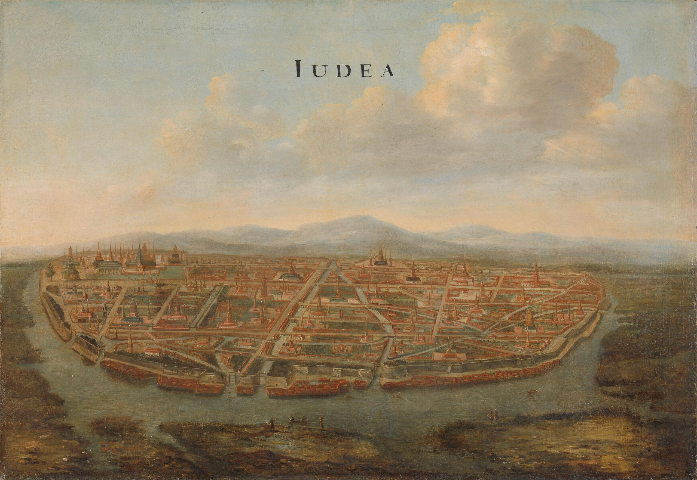
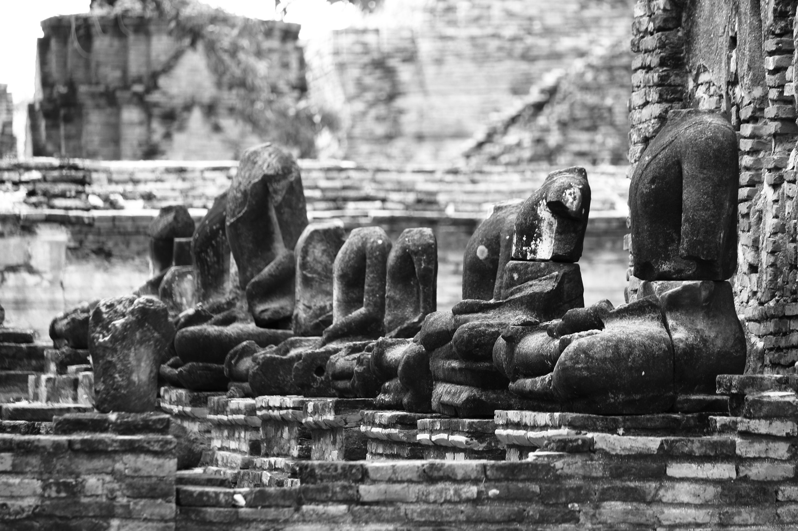
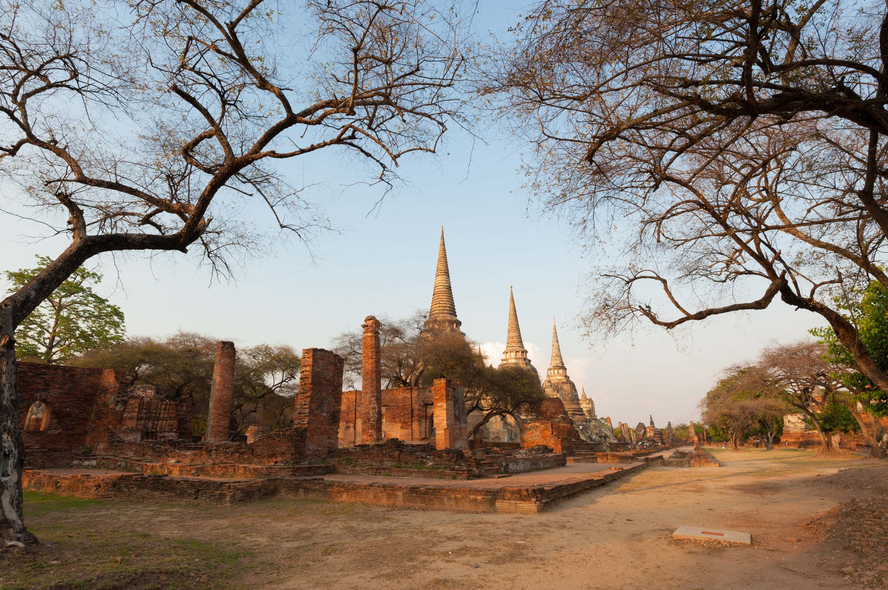
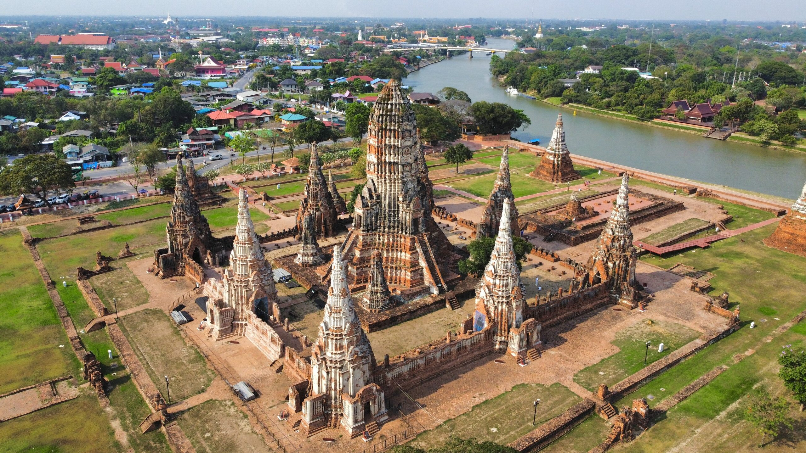
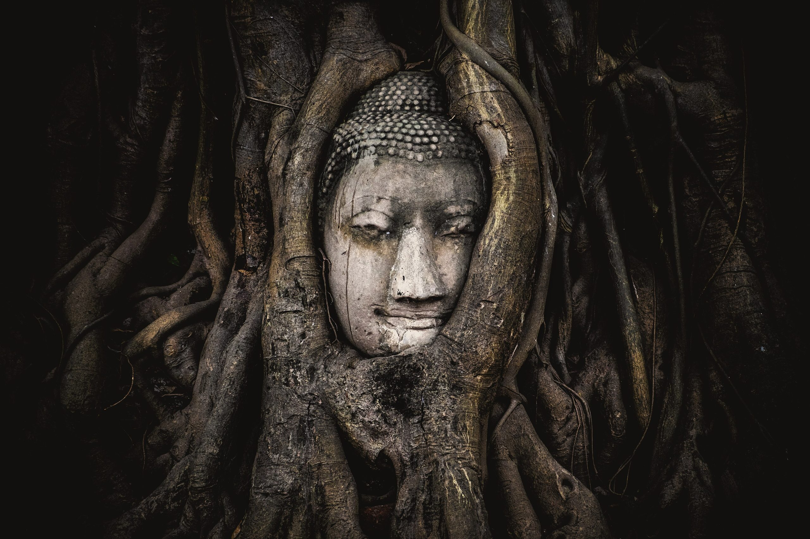
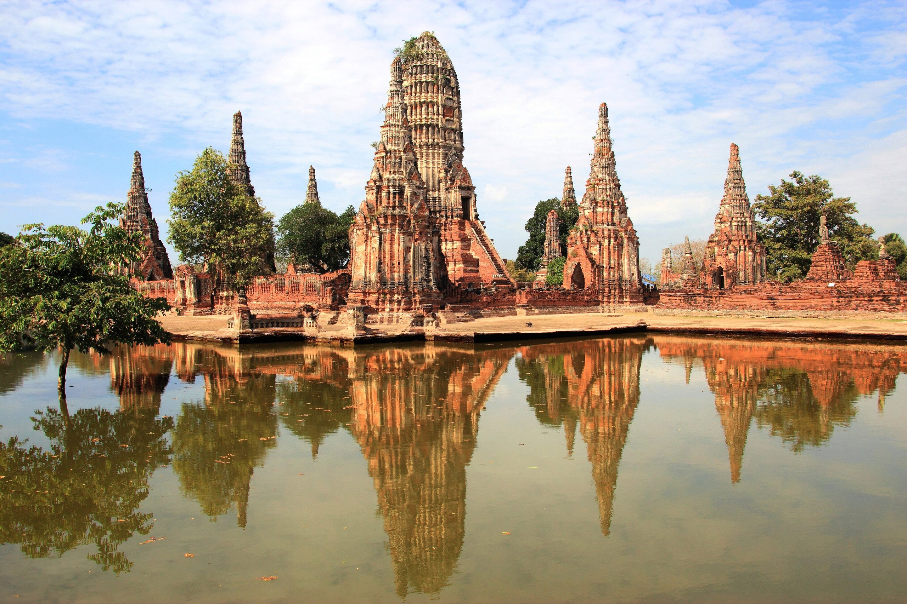
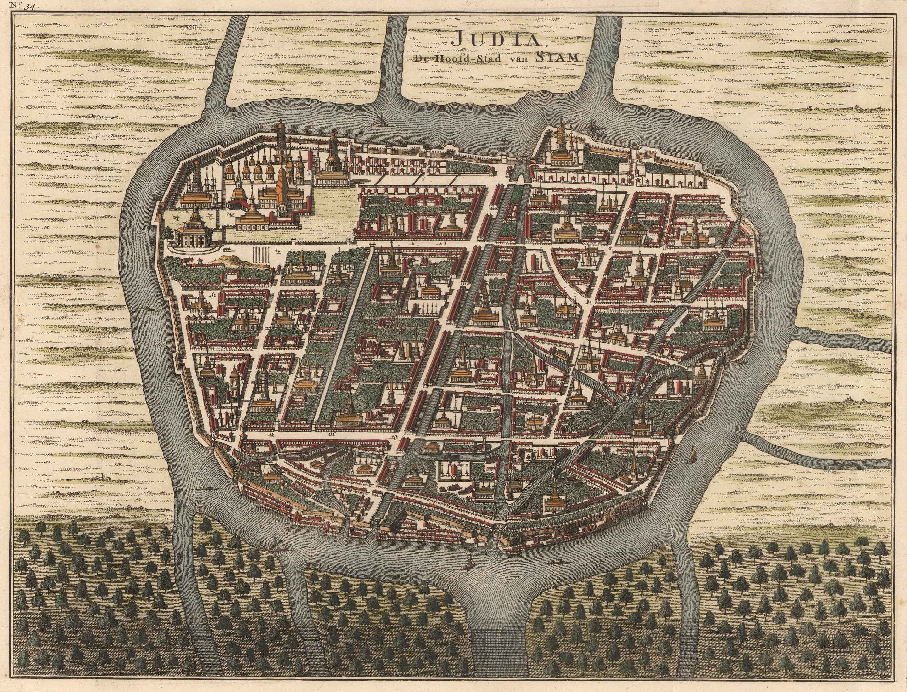
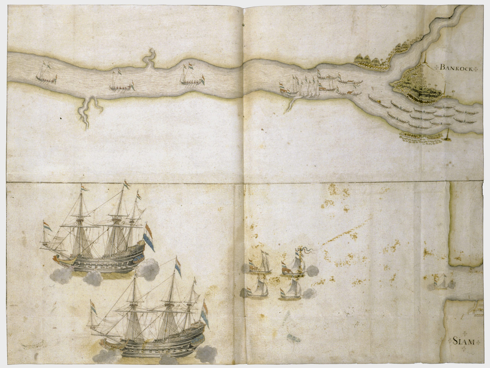
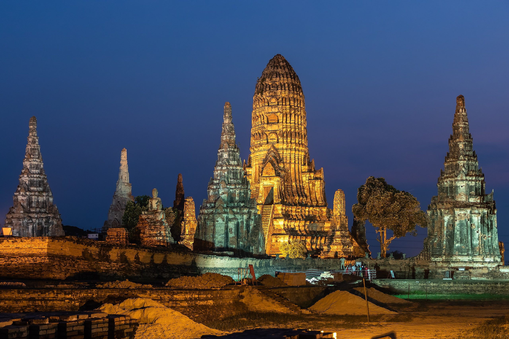

อยุธยา
ราชธานีบนเกาะกลางแม่น้ำ
ทำไมเกาะเล็ก ๆ กลางแม่น้ำ
จึงเป็นราชธานีได้นานกว่า 400 ปี?
ภาพโลก: NASA Blue Marble (สาธารณสมบัติ) · เส้นเขตแดน: Natural Earth
โลก › เอเชียตะวันออกเฉียงใต้›ประเทศไทย›เกาะเมืองอยุธยา
เกาะกลาง
แม่น้ำ 3 สาย
เจ้าพระยา ลพบุรี และป่าสัก
โอบล้อมเมืองไว้ทุกด้าน
แผนภาพอย่างง่าย: แนวแม่น้ำและเกาะเมืองโดยประมาณ ไม่ใช่แผนที่สำรวจ
ทำไมต้องเป็น
เกาะนี้?
ชาวฮอลันดาวาดเมืองนี้ไว้เมื่อ พ.ศ. 2269
เป็นเกาะที่มีกำแพง และมีแม่น้ำล้อมรอบ
แม่น้ำเป็นคูเมืองรอบด้าน หน้าน้ำ
ที่ราบรอบเมืองจมน้ำ ข้าศึกล้อมได้ยาก
เรือสินค้าแล่นจากอ่าวไทย
ตามแม่น้ำเจ้าพระยามาถึงกลางเมือง
ตะกอนจากแม่น้ำทำให้ปลูกข้าวได้มาก
พอเลี้ยงคนทั้งเมือง
แผนที่ “Judia” โดย François Valentijn พ.ศ. 2269 (ค.ศ. 1726) · สาธารณสมบัติ
แผนภาพอย่างง่าย · ระดับน้ำและนาข้าวเป็นภาพประกอบ
พ.ศ.
1893
ค.ศ. 1351 · สมเด็จพระรามาธิบดีที่ 1 (พระเจ้าอู่ทอง)
ทรงสถาปนากรุงศรีอยุธยา
ราชธานี
0
ปี
พระมหากษัตริย์ 33 พระองค์
จาก 5 ราชวงศ์
ภาพ: Johannes Vingboons วาดราว พ.ศ. 2205 (ค.ศ. 1662) · Rijksmuseum · CC0
ทางแยก
การค้าโลก
เรือจากตะวันออกและตะวันตก
มาพบกันที่อยุธยา
จีน · ญี่ปุ่น
ผ้าไหม เครื่องถ้วย
อินเดีย · เปอร์เซีย · ยุโรป
โปรตุเกส ฮอลันดา อังกฤษ ฝรั่งเศส
เส้นประ: ทางบกสู่เมืองมะริด ออกทะเลอันดามัน
ภาพโลก: NASA Blue Marble · เส้นทางเดินเรือโดยประมาณ

แผนที่เรือของบริษัท VOC ฮอลันดา:
เรือใหญ่ในทะเล เรือเล็กแล่นขึ้นแม่น้ำ
Nationaal Archief · สาธารณสมบัติ
ตำแหน่งบนเกาะเมือง
เขตพระราชวังหลวง
วัดพระศรีสรรเพชญ์
ภาพจำของกรุงศรีอยุธยา
วัดในเขตพระราชวังหลวง ใช้ประกอบพระราชพิธี
จึงไม่มีพระสงฆ์จำพรรษา
เจดีย์ทรงลังกา 3 องค์
บรรจุพระบรมอัฐิของพระมหากษัตริย์
ภาพ: Preecha.MJ · CC BY-SA 4.0
วัดไชยวัฒนาราม
สร้าง พ.ศ. 2173 โดยสมเด็จพระเจ้าปราสาททอง
อยู่นอกเกาะเมือง ฝั่งตะวันตก
ปรางค์ประธานแทนเขาพระสุเมรุ
ศูนย์กลางของจักรวาลตามคติพุทธ

0เมตร โดยประมาณ
ภาพ: Average trinmo · CC BY-SA 4.0
ภาพ: Stefan Fussan · CC BY-SA 3.0
พ.ศ.
2310
ค.ศ. 1767 · กองทัพพม่าล้อมกรุงนานกว่า 1 ปี
จนเข้าเมืองได้
เมืองถูกเผาทำลาย วัง วัด และพระพุทธรูป
เสียหายจำนวนมาก
ภายในปีเดียวกัน สมเด็จพระเจ้าตากสินกู้เอกราช
และตั้งกรุงธนบุรีเป็นราชธานีใหม่
ภาพวาดเมืองราว พ.ศ. 2205: Johannes Vingboons · CC0
พระพุทธรูปหินทรายไร้เศียร ในเกาะเมืองอยุธยา · ภาพ: TARIYA SAKMANGKORN · CC BY-SA 4.0
เศียรพระ
ในรากโพธิ์
เศียรพระพุทธรูปหินทราย
ที่รากต้นโพธิ์ค่อย ๆ โอบไว้
0ปี
นับจากวัดถูกทำลายเมื่อ พ.ศ. 2310 ถึงวันนี้
ไม่มีใครรู้แน่ชัดว่าเศียรนี้มาอยู่ในรากไม้ได้อย่างไร
มารยาท: นั่งหรือย่อตัวเมื่อถ่ายภาพ
ไม่ยืนสูงกว่าเศียรพระ
ภาพ: Siripatwongpin · CC BY-SA 4.0
พ.ศ.
2534
ค.ศ. 1991 · ยูเนสโกขึ้นทะเบียน “นครประวัติศาสตร์
พระนครศรีอยุธยา” เป็นมรดกโลก
ภาพ: เฉลิม อัชชมานะ · CC BY-SA 4.0
จากเกาะเล็ก ๆ
กลางแม่น้ำ
สู่มรดกของคนทั้งโลก
ภาพโลก: NASA Blue Marble (สาธารณสมบัติ)
เช็กความเข้าใจ
1แม่น้ำ 3 สายที่ล้อมเกาะเมืองคือข้อใด?
2อยุธยาเป็นราชธานีนานกี่ปี?
3ทำไมเกาะนี้จึงเหมาะเป็นราชธานี?
กดเลือกคำตอบบนจอได้ · กดถัดไปเพื่อเฉลย
เฉลยคำถามของวันนี้: แม่น้ำ 3 สายทำให้เกาะเล็ก ๆ
เป็นทั้งป้อม ท่าเรือ และแหล่งข้าว
อยุธยา: ราชธานีบนเกาะกลางแม่น้ำ
แหล่งข้อมูล
- UNESCO World Heritage Centre. Historic City of Ayutthaya (ขึ้นทะเบียน ค.ศ. 1991). whc.unesco.org/en/list/576
- Chris Baker และ Pasuk Phongpaichit. A History of Ayutthaya. Cambridge University Press, 2017.
- Encyclopaedia Britannica. “Ayutthaya” (เมืองและอาณาจักร).
- กรมศิลปากร. อุทยานประวัติศาสตร์พระนครศรีอยุธยา.
- หมายเหตุ ปี พ.ศ. ตามที่ใช้ในหนังสือเรียนไทย · เกาะและแม่น้ำเป็นแผนภาพอย่างง่าย · เส้นทางการค้าและระดับน้ำเป็นภาพประกอบโดยประมาณ
- แผนที่: Natural Earth (สาธารณสมบัติ) · ภาพโลก: NASA Blue Marble, NASA Goddard (สาธารณสมบัติ)
ภาพจาก Wikimedia Commons
- 1เมืองอยุธยา (Iudea) ราว ค.ศ. 1662: Johannes Vingboons, Rijksmuseum · CC0
- 2แผนที่ Judia ค.ศ. 1726: François Valentijn · สาธารณสมบัติ
- 3แผนที่เดินเรือ VOC ราว ค.ศ. 1635: ไม่ทราบผู้วาด, Nationaal Archief · สาธารณสมบัติ
- 4วัดพระศรีสรรเพชญ์: Preecha.MJ · CC BY-SA 4.0
- 5วัดไชยวัฒนาราม มุมสูง: Average trinmo · CC BY-SA 4.0
- 6วัดไชยวัฒนาราม ยามค่ำ: Stefan Fussan · CC BY-SA 3.0
- 7พระพุทธรูปหินทรายไร้เศียร: TARIYA SAKMANGKORN · CC BY-SA 4.0
- 8เศียรพระในรากโพธิ์ วัดมหาธาตุ: Siripatwongpin · CC BY-SA 4.0
- 9วัดไชยวัฒนาราม เงาสะท้อน: เฉลิม อัชชมานะ · CC BY-SA 4.0
ภาพถูกครอป ปรับสี และใส่เกรน · ภาพ CC BY-SA ที่ดัดแปลงเผยแพร่ภายใต้สัญญาอนุญาตเดียวกัน · ลิงก์ครบใน credits.md · ฟอนต์ Anuphan และ Taviraj (SIL OFL) · © KruSlide